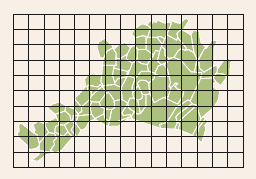
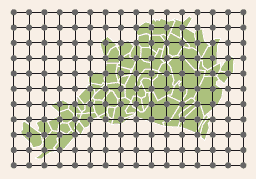
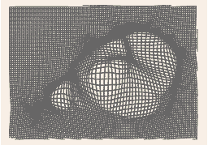
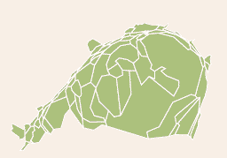

ScapeToad: not just one metric
A note on this version. The ScapeToad you find here is showing its age: it was written many years ago and has not kept pace with modern Java and operating systems. It still does its job, but a complete rewrite is underway to bring cartogram creation up to date. Please check back later for news. In the meantime, bug reports and feedback are very welcome as GitHub issues.
Most 2D-maps are used to represent topographic metrics: distances and areas measured on the map (multiplied by the map scale) give traveling distances and land surfaces. In some cases, this information is irrelevant or even misleading [see an example]. As a cartographer, you may wish to use map metrics to represent other data, such as human populations or amounts of produced resources. This is what ScapeToad is for.
How does it work?
ScapeToad uses the Gastner/Newman [2004] diffusion-based algorithm to adapt map surfaces to user-defined variables without altering their topological relations.

The software puts a regular grid over all layers (usually defined according to topographic metrics)...
...it computes the density for each grid point...
...and applies the Gastner/Newman algorithm while respecting shape constraints.
Map-areas now reflect user-defined variables.How and where can it be used?
ScapeToad is a cross-platform, open-source application written in Java, designed as an independent application using the ESRI Shapefile format for input and output.
ScapeToad also exports maps in SVG format.
ScapeToad has a user-friendly interface, which guides the user throughout the map creation process.
Where can I get ScapeToad?
ScapeToad is available from our download page since April 21st 2008.